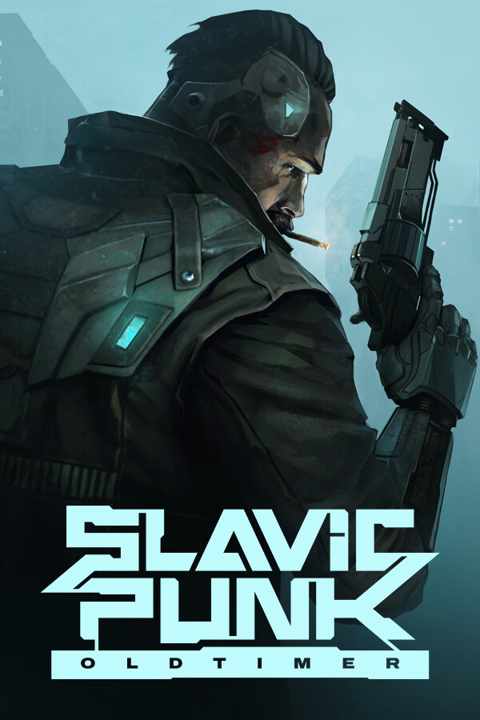

SlavicPunk: Oldtimer
SlavicPunk: Oldtimer
Details
|  | |
| Playtime | Not Played |
| Last Activity | Never |
| Added | 7/1/2023 15:17:28 |
| Modified | 7/1/2023 15:18:31 |
| Completion Status | #Want to Play |
| Library | Playnite |
| Source | Wanderer |
| Platform | PC (Windows) |
| Release Date | 6/28/2023 |
| Community Score | 68 |
| Critic Score | |
| User Score | |
| Genre | Action |
| Developer | Red Square Games |
| Publisher | Red Square Games |
| Feature | Partial Controller Support Single Player |
| Links | Community Hub Discussions Guides News Store Page PCGamingWiki |
| Tag | [EMT] Logo Missing Action Combat Cyberpunk Gun Customization Nudity Sexual Content Shooter Singleplayer Top-Down Top-Down Shooter Twin Stick Shooter |
Description
SlavicPunk: Oldtimer is an isometric shooter video game, based upon the works of Michał Gołkowski, a renown Polish science-fiction and fantasy books author. It is him who created the story of Yanus – a private investigator with a troubled past, now trying to solve an unexpected case revolving around a stolen data carrier, all this while fighting his own inner demons, the urban gangs and a nigh-omnipotent corporation responsible for the downfall of the city he used to call his own.

The game offers solid combat and movement systems, as well as a modular weapon upgrade system, thanks to which the players striding through the dark corners of the city may make every encounter feel and look different. Action-packed levels with stealth elements, hacking and environmental puzzle solving are intertwined with more slow-paced sequences of city exploration, side quests and storytelling.

A unique, inherently Slavic take on the cyberpunk world is sure to leave none indifferent thanks to its sharp, caustic sense of humour and a slightly pessimistic outlook at the neon-grey shades of the surrounding reality, at the same time providing a much needed breath of fresh air to the genre itself.

As a team, the question we asked ourselves was: what was the world going to look like in a couple of decades? How would a hypothetical Central and Eastern European city and its inhabitants differ from, say, Blade Runner ‘s L.A. or Akira’s Neo Tokyo?”.
The attempts to answer this puzzle has had a tremendous deal of influence upon the game’s artistic choices, including a mix of futuristic-esque and overly outdated technologies, the grim, brutalist architecture typical of the post-communist countries, the character’s not-so-obvious moral choices and the often crudely makeshift, yank-and-tuck character and atmosphere of an environment overpacked with people forced to cope with the uneven distribution of goods and wealth, often relying on their wits and sheer luck to make it to the next paycheck without losing their minds.
SlavicPunk story goes to show that there is more than meets the eye to this dystopian version of the future is, and it is only up to the players to discover what lies beneath the neon glow and the concrete streets – helping Yanus unravel his last case and find out just how brutal and ugly the truth may actually be.
The game offers solid combat and movement systems, as well as a modular weapon upgrade system, thanks to which the players striding through the dark corners of the city may make every encounter feel and look different. Action-packed levels with stealth elements, hacking and environmental puzzle solving are intertwined with more slow-paced sequences of city exploration, side quests and storytelling.
A unique, inherently Slavic take on the cyberpunk world is sure to leave none indifferent thanks to its sharp, caustic sense of humour and a slightly pessimistic outlook at the neon-grey shades of the surrounding reality, at the same time providing a much needed breath of fresh air to the genre itself.
As a team, the question we asked ourselves was: what was the world going to look like in a couple of decades? How would a hypothetical Central and Eastern European city and its inhabitants differ from, say, Blade Runner ‘s L.A. or Akira’s Neo Tokyo?”.
The attempts to answer this puzzle has had a tremendous deal of influence upon the game’s artistic choices, including a mix of futuristic-esque and overly outdated technologies, the grim, brutalist architecture typical of the post-communist countries, the character’s not-so-obvious moral choices and the often crudely makeshift, yank-and-tuck character and atmosphere of an environment overpacked with people forced to cope with the uneven distribution of goods and wealth, often relying on their wits and sheer luck to make it to the next paycheck without losing their minds.
SlavicPunk story goes to show that there is more than meets the eye to this dystopian version of the future is, and it is only up to the players to discover what lies beneath the neon glow and the concrete streets – helping Yanus unravel his last case and find out just how brutal and ugly the truth may actually be.